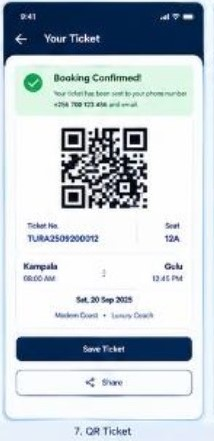

FIND YOUR NEXT STOP
Explore destinations
Browse sample routes around Uganda.
Kampala → Gulu · Northern RegionKampala → Mbarara · Western RegionKampala → Mbale · Eastern RegionKampala → Jinja · Eastern RegionEntebbe → Kampala · Central Region
No routes match your search.
These entries are examples; the connected app lists configured operator routes.
